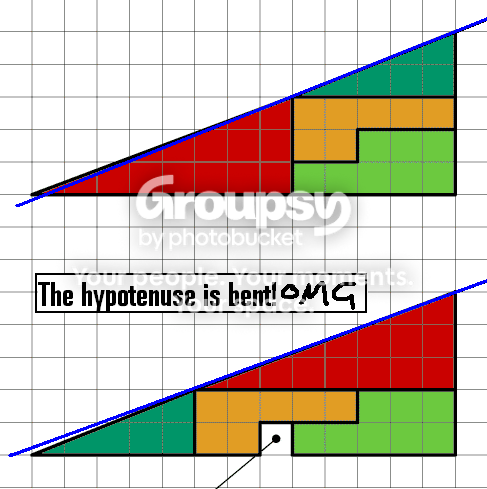

Hey, I'm new here to these forums, I've been playing N for a month or so, and seeing as this is my first post I thought I'd kick it off with a picture I made especially for this occasion. Hope you all like it. Can you guess who inspired it?
Yeh MegaGeo was the inspration, I love his one where N is wallsliding and the camera is positioned above him, looks great. I made mine in Swift 3D and then imported it to photoshop where I made the flame out the back of the rocket, added in a background and put in a bit of blur
lol thank you for pointing that out, but I do see Kerons point, now that I look at it more, his head is a bit coney in that pic. Do you all think I should make another?
Also, are flash sigs allowed on this forum, or is it just images I can use?
His head _is_ a cone
lol thank you for pointing that out, but I do see Kerons point, now that I look at it more, his head is a bit coney in that pic. Do you all think I should make another?
Also, are flash sigs allowed on this forum, or is it just images I can use?
Yeh flash can be pretty confusing, but I've been using it for a few years now so I'm pretty good with it. And to answer jerks question, I live in Brisbane, Australia.
I'll give the flash sig a go and if it doesn't work I'll just stick with my Light Sabre one, which I made in flash but then exported it to a .jpg
Speaking of .jpgs, I just finished another picture! I quite like it, except the spikes on the mine are too bright in my opinion.

And flash sigs don't work, unless I had the wrong code
I'll give the flash sig a go and if it doesn't work I'll just stick with my Light Sabre one, which I made in flash but then exported it to a .jpg
Speaking of .jpgs, I just finished another picture! I quite like it, except the spikes on the mine are too bright in my opinion.
And flash sigs don't work, unless I had the wrong code
My sig was made in flash. And if this forum had flash sigs enabled, I would have had this one
My flashy flash sig
Click the blue bar, it makes music!
And my avatar is from one of the forums galleries
My flashy flash sig
Click the blue bar, it makes music!
And my avatar is from one of the forums galleries
Yeh roughly $800 AUD, but you can get a free 30 day trial version from macromedia.comIt's a shame we're not allowed to discuss illegal hacks on this forum, because I ... er don't know anything about that at all... *ahem*
But when the source comes out, I think I'll make the explosions more elaborate and bigger. And possibly give the drones top hats. Another idea of mine is to add a bullet time for extra convenient precision (sp?)
But when the source comes out, I think I'll make the explosions more elaborate and bigger. And possibly give the drones top hats. Another idea of mine is to add a bullet time for extra convenient precision (sp?)
To make them I use a 3d program called Swift 3D. Their site is here. I'm not really sure if you can get a free trial for it. Anyway, I make all the 3d things in that program, export them and then bring them into Photoshop, where I add all the blurrs and effects. On my latest pic, N, the mine and the exit switch were all made in Swift 3D, and the rest was made in Photoshop
lol I just use txt files as well, I think I've got a few hundred of them. But if you want more organisation... well I can't really think of anything. Maybe Microsoft Word or something.
Anyway, here's a neat program I discovered a while ago, called Z Matrix. It takes your desktop image, and transforms it into a mass of scrolling characters. Looks very cool, check out this screenshot:

You can get the program for free
here.
And just to point out, I only just discovered it's only for pc, and not mac. Sorry mac users
Anyway, here's a neat program I discovered a while ago, called Z Matrix. It takes your desktop image, and transforms it into a mass of scrolling characters. Looks very cool, check out this screenshot:
You can get the program for free
here.
And just to point out, I only just discovered it's only for pc, and not mac. Sorry mac users
If you'd like, I can make you something similar to one of these:


I made those for somebody once, and you can give me some colour preferences and etc
I made those for somebody once, and you can give me some colour preferences and etc
I don't know if anybody has mentioned this, but I would say the best game for the n64 emulator is definately Super Smash Brothers. I find it's almost as addictive as N!
I have a serialfor Flash MX, but there's no way *cough yes way couh* that I would share it, that's illegal 
If that doezn't work, you need to download the flash player plugin for your internet browser
Right here it's only about 900k
Right here it's only about 900k
Can do  Any suggestions for the next pic?
Any suggestions for the next pic?
Any suggestions for the next pic?I always have music playing, and the music I listen to is HEAVY METAL. System of a Down, Children of Bodom, Rhapsody, and a wealth of others.
On a slightly related note, after 3 days I FINALLY beat chapter 36... that one was a royal pain. So I'm currently stuck on 37 and 47
On a slightly related note, after 3 days I FINALLY beat chapter 36... that one was a royal pain. So I'm currently stuck on 37 and 47
Matrix dodge of a chaingun drone ... I like it!
Brickman, what do you mean one plane?
Brickman, what do you mean one plane?
hehe sombrero ... I was thinking top hat, but you might be onto something there with the sombrero ... ooh, and change the gold to bottles of tequila!
Sorry for the double post, but I finished the chain gun one!

Hope y'all like it
Hope y'all like it
I made my first level before I even knew these forums existed. I'm not even registered on the NUMA. I'll go do that now and post my level...
... And now that's done, here's my level
Easy as Pie
I made it back when I thought jumping off a wall was a neat concept
... And now that's done, here's my level
Easy as Pie
I made it back when I thought jumping off a wall was a neat concept
Is that the same as just hitting the refresh button?
IEDIT: There is nothing saying the light/information barrier can't be broken, just it hasn't been.
Actually, there is something saying the light barrier can't be broken. The faster you go, the heavier you become. Also, you get squached in the direction you're going, and time will move slower for you. Of course, to get any noticeable difference in space or time, you have to be travelling like half the speed of light, but the theory goes smoething like:
When you hit light speed, you're weight will be infinite (so you'll need infinite power to move you) and you'll be infinitly thin (I think that means you're a singularity, but that only just occured to me now). And we all know that you can't have infinite power, because hey, it's infinity.
The only things I'll kill are insects, and only if they're annoying me, or if they're a spider. And I'll only kill the spider if I can't get someone else to do it for me  Those things just plain creep me out. But I don't even like to step on ants. If I'm walking somewhere, and I see I'm about to step on an ant (yes, even a single ant) I'll move as to avoid stepping on it. Of course, sometimes it's too late, but I try do my best
Those things just plain creep me out. But I don't even like to step on ants. If I'm walking somewhere, and I see I'm about to step on an ant (yes, even a single ant) I'll move as to avoid stepping on it. Of course, sometimes it's too late, but I try do my best
Those things just plain creep me out. But I don't even like to step on ants. If I'm walking somewhere, and I see I'm about to step on an ant (yes, even a single ant) I'll move as to avoid stepping on it. Of course, sometimes it's too late, but I try do my bestYosemite Sam!

Granted. You become the best at N becuase of your excellent timing, but since your timing is always perfect, people suspect you of cheating and you are shunned from the community.
I wish I had an amplifier big enough to live in
I wish I had an amplifier big enough to live in
8/10 It serves it's purpose, tells everybody your name and website, and it's got a nice simplicity to it. I like how it doesn't get in the way of anything, like some other sigs do
in the movie, it does say, "Based on 'The Hitchhiker's Guide to the Galaxy' by Douglas Adams." I can't remember whether it specifies the book or not
I think it specifies that it isn't based on the book nor the radio series, just that it's based on Adams 'HitchHikers Guide' works. Each incarnation of the Guide has been different, this was done on purpose, Adams wanted each version (book, radio, tv series) to be separate from each other.
Anyway, my favourite movie would probably be Hot Shots 2, or Wrongfully Accused. Much hilarity
lol I definately don't lead the area. Once, there was a huntsman spider in my room, so I spent 20 minutes trying to kill it. I finally did, and the very next night there was ANOTHER ONE and I had to kill that one too. After that I discovered a possible entry point and blocked it with a towel. That was a year ago, and the towel is still there
If you open N, and press \ (forward slash) it will take you to the debug menu. You can follow the instructions via N's readme to find out all you need to know about level creating.
Read the readme, that will tell you everything you need to know. And next time, try searching the forum first rather than posting a new topic. A tonn of these have already been created and answered
I'd like it, it could have cool 3d images like the ones MegaGeo and myself have made
Maybe some graphic options, like you can unlock a top hat for N, or something like that
I just discovered that if you're using Notepad, and your level isn't pasting properly, you can (it takes a while but it works) copy and paste it one line at a time. For big levels I would try two lines at a time, but I just tried it and it worked well, got rid of the stupid problems that N can be unfortunately plagued with
OH ok, I get what you mean. I didn't really put much thought into the backgrounds of these though ...maybe I should have
May I ask what that was for?
Granted, but due to speedy delivery, the contents are broken beyond repair.
I wish I were able to complete chapter 47
I wish I were able to complete chapter 47
yeh all that would totally rock
Oh ok, so the key is not to use notepad?
I was just thinking (and sorry if it's already been posted) that a good idea for the Ned would be the ability to reposition switches for doors and exits without having to delete the door and re-do it. It's just a small thing but hey, an improvement is an improvement. Feel free to laugh at me if there already is a way to do that and I just don't know it.
The S guy could be good for a boss level, possibly something to unlock? Like if you manage to nab every piece of gold in a chapter, you unlock that chapters S level. That way, you can go through and beat the game without ever facing S, and later if you want go back and try and grab all the gold bricks
Will metapad corrupt level texts like notepad does? Or will it keep everything where it should be. I would use Microsoft Word, but it's pretty slow to load
Edit: Ok, metapad is definately my new notepad. Its great
Edit: Ok, metapad is definately my new notepad. Its great
Hey cool level dave, it would work well as an internal level, because it's challenging, but if you do it right it can be over in 15 seconds
Omg dead topic sorry about that I didn't even notice
like at the main menu there's a 'Gallery' selection
Ooh, better break out the aloe vera for that BURN
I'd just like to point out that beyond the Milky Way there are more galaxies. So if you leave the Milky Way, you'll go through a lot of blank space, and then discover another galaxy with another trillion stars or however many there are in the milky way
What, "This Love"?
Granted, but you stop playing N!
I wish for world peace
I wish for world peace
I find even though you have to sign up (free) that photobucket is the best. You get your own space and like a photo album set up for you, it's really convenient
Definately, I'd love to see Official Level Packs (OLP's)
And do you guys have level making competitions of any sort? Those are great. I remember in the Elastomania community, they have Level of the Month competitions, which is open to everyone to compete, and at the end of the month the best 10 are voted and go into an official Level of the Month pack. The months are usually themed as well, like one month could be themed around mines, so everyone would make maps that revolve around mines. The next month could be an N-art level competition, and the next thwumper theme. It would be great to see that implemented
And do you guys have level making competitions of any sort? Those are great. I remember in the Elastomania community, they have Level of the Month competitions, which is open to everyone to compete, and at the end of the month the best 10 are voted and go into an official Level of the Month pack. The months are usually themed as well, like one month could be themed around mines, so everyone would make maps that revolve around mines. The next month could be an N-art level competition, and the next thwumper theme. It would be great to see that implemented
Can't help but notice you have a sig... or do you mean a good sig?
Could a few people please voteand review my maps? They flew through the front page without much of a chance to get rated.
http://numa.notdot.net/map/10008
http://numa.notdot.net/map/9968
I don't mind really about the second one, but I put a fair bit of effort into the top one there
http://numa.notdot.net/map/10008
http://numa.notdot.net/map/9968
I don't mind really about the second one, but I put a fair bit of effort into the top one there
Elastomania relies more on the community than N, but I wouldn't say either is better than the other. They are both fantastic games
The density of a black hole is truly incredible. Here's a uick guide how to MAKE a black hole.
Take a planet roughly the size of the Earth.
Compress it down to the size of a pea.
By this point the gravity will be so dense that all your compressing machinery will be sucked into it, making it more dense, and then light will be sucked into it, and anything else in the area. So I suggest you use radio controlled equipment.
Or, just make a star go supernova. Sometimes when a star explodes, the core collapses on itself, and drags all the star debris in with it. The more stuff it drags, the heavier it becomes, and thus is the vicious cycle that creates black holes
Take a planet roughly the size of the Earth.
Compress it down to the size of a pea.
By this point the gravity will be so dense that all your compressing machinery will be sucked into it, making it more dense, and then light will be sucked into it, and anything else in the area. So I suggest you use radio controlled equipment.
Or, just make a star go supernova. Sometimes when a star explodes, the core collapses on itself, and drags all the star debris in with it. The more stuff it drags, the heavier it becomes, and thus is the vicious cycle that creates black holes
Awesome. Awesome to the max.
Yeh it does take a lot of computing power to run, but then so does N, right? I use it exclusively as a screensaver
Yeh it does take a lot of computing power to run, but then so does N, right? I use it exclusively as a screensaver
I don't particularly want to learn Maya, it sounds too complicated and expensive lol. But my friend has 3dsmax 7, I'm going to give that a go. But I like the way Swift makes the vector renderings with the outlines and such. Can Maya do that? Well, even if it can I'm not going to get it, because it costs like $10 000 or something ridiculous
Ok well $300 US is still like $450 AUD, so I'm only short $430 lol. I think I'll stick with Swift, it has great integration with Flash, which is the main reason I got it anyway
Just a subquestion, according to the poll, 55% of people have 9/10 finished. I would like to ask those people, how long did that take you?
As for me, I've been playing a month or so, and I've finished columns 0, 1 and 2, and I'm currently stuck on chapters 37 and 47 ... But I'm about to crack 37, I can feel it, I'm getting really close to solving that one with the thwumper you have to ride from one side of the level to the other, I forget the level name
As for me, I've been playing a month or so, and I've finished columns 0, 1 and 2, and I'm currently stuck on chapters 37 and 47 ... But I'm about to crack 37, I can feel it, I'm getting really close to solving that one with the thwumper you have to ride from one side of the level to the other, I forget the level name
Yeh, waaaaayyyy to hard to implement, it would be slow and I imagine the coding for it would give even the best coder a headache they'd never forget. Flash is a 2d program, to make 3d in it, you have to program in a third axis or something, I don't really understand it but it's quite insane lol
lol not too demanding at all, I love answering questions when I know the answers to them
The cartoony effect on all of them (that is, the black outlines) are generated in Swift. The blur effect (motion blur) is made in Photoshop. As for how much I paid for it, well I'll just say this.
[LIE]I bought my version of Swift 3d Version 4 from my local Software shop and thus obtained it 100% legally[/LIE]
I hope this answers at least some of your questions
The cartoony effect on all of them (that is, the black outlines) are generated in Swift. The blur effect (motion blur) is made in Photoshop. As for how much I paid for it, well I'll just say this.
[LIE]I bought my version of Swift 3d Version 4 from my local Software shop and thus obtained it 100% legally[/LIE]
I hope this answers at least some of your questions
And this new information on the source code greatly improves my hope on learning more in flash and flash produced physics.
If I were you I'd start looking at as many tutorials on flash actionscript as you can, because it is very, very complicated, especially at this level. I must say I've been using Flash for 3 years, and this game has been coded in a totally different way than anything I've ever seen, in a way it's weird. But yeh, all the physics and stuff would seem like total incoherance for anybody new to actionscript. Just warning you now so when you get the source code you don't go "Ok, well I have 10 000 lines of code ...wonder what it all means" because it'll be something insane like that
Can I copy my .sol from my PC and use it on a MAC? Because my school has mac computers, and I have N in my school folder, so logically I want to get up to where I am at home so I can try beat things at school as well. Possible?
N should have a flavour that's hot pink.
Oh wait, HE ALREADY DOES
Oh wait, HE ALREADY DOES
Am I too late to enter the round? If so just disregard this
EDIT: OMG pixelly lol
EDIT: OMG pixelly lol
Ate a big bowl of salt
Licked my elbow
You know that trick where it looks like you pull your thumb off? Yeh, I can pull my thumb off.
Unusual Church Sermons
Licked my elbow
You know that trick where it looks like you pull your thumb off? Yeh, I can pull my thumb off.
Unusual Church Sermons
Children of Bodom - Bodom Beach Terror
Sorry, the sharing of .sol files is frowned upon around here. At least, that's what I've gathered in the short time I've been here
It's ok I have 3 days before it's too late to find out, so I wouldn't stress
Quick story to explain: The story of the emporers new clothes.
There was an emporer who was disliked. His right hand men informed him of a (fake) new type of cloth that was invisible to foolish people, but wise men could see it. They made him an outfit of this made up material, and when the emporer stood in front of the mirror (stark naked of course) he lied and said he could see the outfit, not wanting to be a fool. His men all agreed the 'outfit' looked great. The emporer then rode his horse through his kingdom to show off his new outfit, and all the peasants and such laughed at him hystericaly, for he was wearing no clothes. The End
...That's somewhat right isn't it?
There was an emporer who was disliked. His right hand men informed him of a (fake) new type of cloth that was invisible to foolish people, but wise men could see it. They made him an outfit of this made up material, and when the emporer stood in front of the mirror (stark naked of course) he lied and said he could see the outfit, not wanting to be a fool. His men all agreed the 'outfit' looked great. The emporer then rode his horse through his kingdom to show off his new outfit, and all the peasants and such laughed at him hystericaly, for he was wearing no clothes. The End
...That's somewhat right isn't it?
Hell Yeh!
This smiley ?
?
This smiley
?


It would be much better if the letters were on Black instead of white, because they have a black trim, they would blend a lot better
Yeh I know what you mean, when I make a level, I like it to be simple, yet easy to like stuff up and die, example
http://numa.notdot.net/map/10008
I'd enter that map but it has gauss turrets
http://numa.notdot.net/map/10008
I'd enter that map but it has gauss turrets
Sadly, I'm pretty sure you can't code a "Do you want to quit yes/no" function in flash, because once you hit the X, the flash player stops all scripts and closes. Feel free anybody to correct me, but I'm 80% sure it's impossible
Of course everything will be backed up. The plan is to use my trusty flash drive, and copy my .sol onto it, then drop it onto the school macs
lol has anybody noticed that jet boots would be incredibly hard to control? They'd fly straight out from under you and you would topple over very easily. Yay, vote
You know you've been playing N too much when you walk past the elevator button and expect it to go 'blip' and the doors to open without you actually pressing anything
Grand Theft Auto?
K I've got a plan on ho to find where to put it. I put N on the machine, play a level, quit, then run a search for *.sol . Then when the file is located I can switch it with my good save. I'm such a genious.
*gloats*
I command you to put that text on a black background, look how awesome it looks. You could have black background, and the the edges of it could trail off with blue somehow, and it would rock
See now this is the kind of thread we need. If you could just rate and comment on this one, it would be much appreciated
Pipe Cleaner
I'd offer to rate and review maps too, but pretty much all user maps I try are too hard for me, so I get like a quarter of the way through the level which isn't really enough to vote with lol
Pipe Cleaner
I'd offer to rate and review maps too, but pretty much all user maps I try are too hard for me, so I get like a quarter of the way through the level which isn't really enough to vote with lol
Cool. When I make maps, I go for fun value, not difficulty. Like I said, I'm not great at the game.
Tought I'd jazz my version up a bit. Feel free to steal it coldfire
That's just like in Elastomania, you get a total time which combines your best time from every level together. Only in N you're trying to get your score as high as possible, whereas in Elastomania you're trying to get it as low as possible because the counter counts up
Sure it does, the first grand theft auto, with the top down view and the guy in the red shirt
OMG lol what a lousy technicality. Well I'm going to guess again and say GTA London. HA
But it's quite clear you do exist, or that post would have never appeared
Does anybody else forget they have capslock on when theyre making a level, and then go and talk to someone on msn and be like 'HEY MAN WHATS UP', coz I do that everytime I make a level lol
well see you say it's crap, but I think it's brilliant. The physics are so good (as they are in N) which I'm not used to seeing in Flash. I use flash and really have no idea on how physics work in flash, and the tuts on this site confuse me to no end.
Make sure caps lock is turned on
Doh, I accidentally voted 2, when I meant to vote 5
Cradle of Filth - Dusk and Her Embrace
I can't remember, but I estimated around the 2 month mark
Yay, my suburb.

Windowed, it's one click faster than maximising it  . And I'm always on msn and yahoo and checking out some website
. And I'm always on msn and yahoo and checking out some website
. And I'm always on msn and yahoo and checking out some websiteYeh but ... shut up, that's why lol
Wow, the latest I ever go to sleep is like 2, and I usually sleep in till about 10:30, but I set my alarm for 9, I hate wasting half the day by sleeping
I guess he would just push off the wall with his hands. I reckon it's an awesome idea
I started to make one too, but I dunno if I'll finish it, it's pretty slipshod. So far I reckon the best is Tech Park
Yeh, flailspound is me, lol that's my demo. When I signed up, for some reason it said the username Jesse was taken so I had to pick a different one. I'll demo some of the other levels now if I can find some good lines
EDIT: Ok I just spent a while putting together a couple of great jumps into a demo. Crash Park pwns!
EDIT: Ok I just spent a while putting together a couple of great jumps into a demo. Crash Park pwns!
It was pretty cool, I liked the escelator, but it seemed more reliant on the games flaws than N's abilities. Good work though
Nah, stickmen don't have hands
Revenga--System of a Down. Their new album rocks
HELL YEH
God Forbid - Better Days
When I play N, it pretty much stops everything else running, so I set WinAmp to a high priority, and then go into boss mode when I want something else. My boss mode seems to stop N completely, it takes like no processing power when it's in Boss mode. When it's in normal mode though it takes up like 80%. Which leads me to a quetion that's probably answered somewhere - why does N take up so much power?
I'm still on the baggy cargo wagon, or just baggy in general. It's comfortable, so it passes the Jesse test. Jeans are also on the list, as long as they're baggy
Why does the ninja even bother? When he wins he just gets dumped into another room of death and doom
Because, he has an insatiable (sp?) appetite for gold and realistic physics
Why is his head a triangle

My guy looks more like a super-villian, but it's all good
N
Super Smash Brothers
Spiderman 2
I don't play a lot of games
Super Smash Brothers
Spiderman 2
I don't play a lot of games
Just occured to me nobody has made a female superhero

There we go
There we go
sry for the double post but ... STORMTROOPER!

lol he looks too heroic for a stormtrooper
lol he looks too heroic for a stormtrooper
omg that level was a pain for me to complete, but in the end I got there and danced
(stupid question that i should know the answer to but somehow do not)
Where's the kill count located
Where's the kill count located
Bug? I see the bug is something about name picking, which would explain why it wouldn't let me have 'FlailSpound' which imo is a great name, yet was somehow 'already taken'
Out of a random turn of events, I now own a copy of 3DS MAX 7, so give me a while and I'll suss out how to work it properly and make another pic
I seem to have nothing copied to my clipboard at the moment, or if I do it isn't a string of text
Ha, I'd never even been in the highscores section
Self: 716
Mine: 929
Floor Guard: 209
Gauss: 694
Homing: 589
Gunner: 104
Laser Drone: 328
Zap Drone: 989
Thwump: 352
Total: 3980
And I accidentally voted mines, instead of drone
Self: 716
Mine: 929
Floor Guard: 209
Gauss: 694
Homing: 589
Gunner: 104
Laser Drone: 328
Zap Drone: 989
Thwump: 352
Total: 3980
And I accidentally voted mines, instead of drone
BAhaha captain Communism, now theres an awesome superhero name
Yes you certainly do, sorry about that
You'll find that the timer starts at 90 seconds on the first level of the chapter, and the time rolls over to the next level and so on. You probably aren't getting the gold, every gold piece gives you a 2 second time bonus
My longest time is like an hour at the most, I can't stay on forums because I run out of new threads to post in lol
I didn't like it, it was too messy and crazy in my opinion. It was pretty much just Air Raiden with blocks for graphics and a weirder movement system (can't turn while shooting what's up with that)
EDIT: After playing it a bit more, I've decided that it's not as bad as I initially thought, but it isn't a game that I can play for more than 5 minutes
EDIT: After playing it a bit more, I've decided that it's not as bad as I initially thought, but it isn't a game that I can play for more than 5 minutes
Also I'm yet to come accross a map that's worthy of a 5. For a map to be rated 5, everybody who rates it would have to rate it 5, and some people like things that others don't, so getting a 5 would be nigh impossible
I guess it could be useful for ddas, but that's about all they'd be good for. If someone wants to make a DDA mod for the game then use this, but otherwise ... nah
Yay, my entry, took seven minutes and made totally from scratch
I'll list a couple of great dreams.
Here's one that scared the hell out of me. I'm at a pool, and I jump off the diving board into the pool. I start swimming back up to the surface ... and keep swimming up, and the surface never comes, and I wake up at some point before my lungs explode
Once I was lying in my bed, trying to get to sleep. After what seemed like hours of lying, I woke up. Turns out I had dreamed I was trying to get to sleep. Further investigation showed I'd only been asleep for about an hour.
Recurring dream when I was about 8 years old: It would always start the same. I'd be walking on some beach type area, when a space ship would come crashing down in a huge fireball, only metres from me. The door would open, and each dream a different alien would come out and, naturally, try to kill me. The only alien I can remember is some sort of half man half plant (he was in a pot of dirt) and he stole my mother, and I tried to hit him with an umbrella. Weird.
Here's one that scared the hell out of me. I'm at a pool, and I jump off the diving board into the pool. I start swimming back up to the surface ... and keep swimming up, and the surface never comes, and I wake up at some point before my lungs explode
Once I was lying in my bed, trying to get to sleep. After what seemed like hours of lying, I woke up. Turns out I had dreamed I was trying to get to sleep. Further investigation showed I'd only been asleep for about an hour.
Recurring dream when I was about 8 years old: It would always start the same. I'd be walking on some beach type area, when a space ship would come crashing down in a huge fireball, only metres from me. The door would open, and each dream a different alien would come out and, naturally, try to kill me. The only alien I can remember is some sort of half man half plant (he was in a pot of dirt) and he stole my mother, and I tried to hit him with an umbrella. Weird.
http://img.photobucket.com/albums/v252/Spa...ofthefuture.swf
my flash sig that I use on forums where flash sigs are allowed
my flash sig that I use on forums where flash sigs are allowed
lol 70 percent of my dreams are nightmares, 20 percent are weird dreams that I have no idea as to what they mean, 5 percent are neither good or bad, and the last 5 percent are good dreams, where something actually goes my way
Yeah I saw a tutorial about how to make planets. Your is cool, but I've seen better. Use more brushes. It is hard to do in ten minutes but.
I did mine without the help of tutorials actually
lol it would make a good mod
lol I dunno how to use custom brushes, but I made sure I added the obligatory lens flare. Lens flare makes everything look great lol
Ha awesome, I did the same thing with a chapter somewhere in the late 40's, had two seconds left when I finished
I assume from the exactness that this percentage appears somewere on the forum?lol no, Eldrial counted every single post of yours and then figured out the percent. lol how bored would you have to be to do that.
Can I suggest one of these threads locked or deleted, there are two asking the same question by the same member
lol if you had to pay a dollar for every post on this forum you'd only have like 1 post on it, and that would be from Raigan
I really would like to see an N2 with most of the good suggestions added. A sort of more adventure-based N with loads more objects and no Flash
Gasp, you can't take away flash, Flash is the best!
I reckon it would be cool though to have a more adventure based feel to some sort of N2
Am I the only one who thinks cds and dvds should be contained in some sort of plastic case, much like a floppy disk? It would pretty much ensure the safety of your cd/dvd, and would only add like an extra millimetre either side of it
Rhapsody - Guardians
[off-topic]@Jesse: I think flash sigs are allowed here. I know flash avatars are allowed.[/off-topic]
[offtopic] I tried already, the flash bbcode isn't installed on this forum [/offtopic]
Number 1 is the best, followed by two then 3
The idea is that a fire truck is usually around a fire, which is exciting
See it doesn't even need to be reprogrammed into C++ or whatever. It could just stay in Flash, and just get better scripting. Not to say that the current scripting isn't brilliant, because quite frankly it is, and I see no reason for said two people to go and change it, but yeh putting it into C++ would require lots of learning how to script things in C++, and really it just woulnd't be the same.
i remember that picture . . . i never thought the picture really fit N.Yeh me either. It would have fit better if there were tonns of them for the game for different circumstances (but then I can't thinkof any circumstances except dying, finishing a level and running out of time that would prompt any sort of image anyway)
omg lol this level was such a bastard to complete. At first I was like 'um ... this is physically impossible'after a while I was like jumping on top of a thwump, and jumping out of the way of mines, then back on the thwump, and so on until I reached the top.
Skintilla - Trust
Converting it to a jpg could reduce quality. I reccommend converting to .png Of course I'm not sure if pngs work as avatars
Ha this ones cool

So like this one time I was swimming in the ocean, and I dove down so far that there was a giant plankton and he stole my watch. But I got him my revenge, I fed him to a whale. And that's wats wrong with the government.
I am the king. The next person to autograph my spongebob and patrick picture will be king.

I am the king. The next person to autograph my spongebob and patrick picture will be king.
It's called Ambivalence
Amivalence:
The coexistence of opposing attitudes or feelings, such as love and hate, toward a person, object, or idea.
Amivalence:
The coexistence of opposing attitudes or feelings, such as love and hate, toward a person, object, or idea.
BEhaha those are great. I noticed a missing word in the last comic though, where he says "I'll pretend I didn't hear that either" the word 'hear' has been left out.
Oh of course, I mean it's only one word out of all those comics, I'm sure nobody else will notice.
Yeh that makes sense. When my parents are home, I spend more time on the computer just so I don't have to converse with them much
Wow, I find it strange how all these people post for help, where as I haven't been stuck on an episode for more than 2 or 3 days, and I just kept at em and finally got them. I'm only going to post for help if I don't actually see a way of finishing the level.
Yeh it's good for the official version to be limited, but then for certain mods to have all sorts of crazy ideas, eg slippery surfaces and powerups and such. I know it's been suggested before, but I want someone to mod N so he's on a skateboard and can do all kinds of tricks
Started great, but slowly going downhill ...y'all
I only ask for one thing ... Omnipotence. That way I can do anything. I can fly, I can punch through a wall, or crush a galaxy by clicking my fingers, or melt your brain with my eyes, or end world hunger, or solve all the mysteries of the Universe, or create even longer, more pointless lists of things to do once I achieve omnipotence.
Also, I don't think you can have .swfs as sigs in this forum, or if you can I don't know the code for it
Once I did, but it was over something so lame and insignifigant. 5 minutes later I was like 'omg I'm such a dumbass, sif anyone would kill themselves over that' and never again has it occurred to me.
I was never one for religion, didn't believe in any of it, but now I'm totally against it. Just the word religion makes me want to punch something really, really hard. Even as I'm writing this I'm getting really angry. And the reason for this is as follows.
I was going out with this girl, and we'd been going out for a year. A whole year. And suddenly she had to break up with me, only because she's a Jehovas Witness, and their religion forbids them to see people who aren't Jehovas Witnesses. So yeh after a year of greatness it was suddenly over, and that pissed me off so much I still get livid whenever I think about it (it was about a year ago that we broke up). I'm not angry at her, in fact we still talk often, but I'm angry at the fact that someone would put so much of their lives into something that (in my opinion) is total crap. I'm going to stop now before I put a hole in my monitor.
I was going out with this girl, and we'd been going out for a year. A whole year. And suddenly she had to break up with me, only because she's a Jehovas Witness, and their religion forbids them to see people who aren't Jehovas Witnesses. So yeh after a year of greatness it was suddenly over, and that pissed me off so much I still get livid whenever I think about it (it was about a year ago that we broke up). I'm not angry at her, in fact we still talk often, but I'm angry at the fact that someone would put so much of their lives into something that (in my opinion) is total crap. I'm going to stop now before I put a hole in my monitor.
Other languages? I barely speak english lol. I studied Indonesian (compulsory, I didn't choose to do it) for like 4 years in primary school, but now I only remember like 4 words.
At the moment I'm stuck on 76-4. A few times I've come within like a millimetre of the open door, and get zapped. I think it's the most frustrating level I've played so far.
Me and my friends made up a new style of music, combining Funk with Deth Metal ... Deth Munk
He's from Dragon Ball Z (One of the movies I think) and he's also in Budokai 3
I am the King. The next person to post a photo of their old NES or SNES will be king
I am the King. The next person to post a photo of their old NES or SNES will be king
I just got back from a boxing tournament, so the funniest thing I've seen in a while is definately watching 2 nine year old kids wail on each other for 5 minutes or so. It was great
Seems kind of empty to me lol
I would mod a car so instead of a steering wheel and pedals, it would be a sony controller
I'm right into heavy metal. And I mean heavy.
Yeh it's scrubs alright, I'd recognise that theme song anywhere. I even downloaded it after hearing it on tv lol
How can it suck, it's 2.4 ghz. But I guess it is a Dell
5'10 I think, and about 75kg
So it's more like a cannon, I get it. But I don't think it would fit with the flow of the rest of the game
^has an obscenely large block of text in his sig
< Had to look up dictionary.com for the spelling of "Obscenely"
< Had to look up dictionary.com for the spelling of "Obscenely"
Photoshop and occasionally flash for animated things
I get 8 ms/f like before i start a level, but when I'm playing a level it usually goes around 15-20
I've only made a couple of maps but I reckon i spent over an hour on each of them
I only have winXP, I'm not educated enough to know the advantages of having dual boots and such
I used to think I'd never fall in love, then BAM new girlfriend just yesterday. *jigs*
Would also wreck close call records, but like every tenth of a second would be fine
You are opening the .exe right?
Yeh the different strengths aren't really needed, I mean there aren't different strength jump pads are there
Damn I wanted that lolQuotedone & done
Just to deviate for a second, has anybody heard of the Flying Spaghetti Monster parody religion?
http://en.wikipedia.org/wiki/Flying_Spaghetti_Monster
http://en.wikipedia.org/wiki/Flying_Spaghetti_Monster
I reckon I'm faring pretty well in the game, completed columns 00 through to 70
Woo got it on my third try. Confused me for a while though lol
Could it be something like your computer has more programs on it than it did 4 months ago, so it lagging now because it's full of junk? That's what mine is like lol
In a brand new relationship! Been going out for like a week, and it's going great.
Jesse: That's just barbaric. I've slept with a hansman on my cieling. Okay, I'm not saying everybody should be comfortable with that, but at least get a glass and some paper and just put it outside. It's not like they're poisonous. And, also, at a totally practical level, then you don't have to clean up spider guts. Honestly.lol I know they're not poisonous or dangerous in the least bit, but I have intense arachnophobia lol. I couldn't bring myself to get close enough to a spider to get it into a glass to take it outside. I hate killing them but I hate the idea of a spider being within a 4 mile radius of me lol.
Killing and mauling innocent people doesn't really achieve muchI dunno, it achieves a LOT of media coverage lol
Haha what a great line ... I dunno what it's from, sounds like something from Futurama
This is still my proudest of works, and my first major picture I ever did in Photoshop, made totally from scratch:
http://img.photobucket.com/albums/v252/SpatulaHead/hh.jpg
Then I found the art of photo manipulation:
http://img.photobucket.com/albums/v252/Spa...d/jesse_sig.jpg
http://img.photobucket.com/albums/v252/Spa...Head/cobsig.png
http://img.photobucket.com/albums/v252/Spa...lbubblessig.png
Entry in the ten minute photoshop competition, from scratch no tut:
http://img.photobucket.com/albums/v252/Spa...quickplanet.jpg
Couple of other sigs:
http://img.photobucket.com/albums/v252/Spa...ad/notapipe.png
http://img.photobucket.com/albums/v252/Spa...plosionsig2.png
http://img.photobucket.com/albums/v252/SpatulaHead/hh.jpg

Then I found the art of photo manipulation:
http://img.photobucket.com/albums/v252/Spa...d/jesse_sig.jpg

http://img.photobucket.com/albums/v252/Spa...Head/cobsig.png

http://img.photobucket.com/albums/v252/Spa...lbubblessig.png

Entry in the ten minute photoshop competition, from scratch no tut:
http://img.photobucket.com/albums/v252/Spa...quickplanet.jpg

Couple of other sigs:
http://img.photobucket.com/albums/v252/Spa...ad/notapipe.png

http://img.photobucket.com/albums/v252/Spa...plosionsig2.png

im working on a flash animation where it scrolls through them lol
I'm pretty sure you can't have a flash sig on these forums. Flash avatar yes, but not flash sig.
Magic. lol actually it's really easy. I'll write a quick tut that will hopefully help some people.
Get the brush tool, and use a brush that looks a bit jaggedy(colour to black), set the size to pretty big and just put one spot on the page. Then get your circly selection tool and put a circle inside the blot of brush. This will be the planets circumference. Invert the selection (I forget how to off hand, select>invert or something) and press delete. This will wipe everything except what's inside the circle.
Invert the selection again and go filters>distort>spherize. You'll want to have it at 100%. After that, go to Image>Adjustments(something like that)>gradient map. Here you can pick colours for your planet. I'll let you figure that one out.
Now get a normal brush, set it to really big (like the size of the planet) and set the transparency to like 10%. Brush a few times over the bottom right corner of the planet (or any edge you want) to give it a shadow.
To get the atmospherey glow around the planet, I just duplicated the layer and blurred the bottom one (filters>blur>gaussian) until it had a good glow around the edge.
For the background I just painted a big dark blue background, and put spots of white for stars. Then went filters>noise>add noise to give it a tiny bit of graininess. Then added a lens flare in the top left (filters>render>lens flare) And yeh that's pretty much it. In seven minutes lol
Any questions just ask
Get the brush tool, and use a brush that looks a bit jaggedy(colour to black), set the size to pretty big and just put one spot on the page. Then get your circly selection tool and put a circle inside the blot of brush. This will be the planets circumference. Invert the selection (I forget how to off hand, select>invert or something) and press delete. This will wipe everything except what's inside the circle.
Invert the selection again and go filters>distort>spherize. You'll want to have it at 100%. After that, go to Image>Adjustments(something like that)>gradient map. Here you can pick colours for your planet. I'll let you figure that one out.
Now get a normal brush, set it to really big (like the size of the planet) and set the transparency to like 10%. Brush a few times over the bottom right corner of the planet (or any edge you want) to give it a shadow.
To get the atmospherey glow around the planet, I just duplicated the layer and blurred the bottom one (filters>blur>gaussian) until it had a good glow around the edge.
For the background I just painted a big dark blue background, and put spots of white for stars. Then went filters>noise>add noise to give it a tiny bit of graininess. Then added a lens flare in the top left (filters>render>lens flare) And yeh that's pretty much it. In seven minutes lol
Any questions just ask
Once upon a time
There lived a small boy named Joe
He died the next year.
lol a bit morbid but whatever.
I am the king. The next person to post a picture of my favourite car will be the next king.
Hint: It starts with C, and rhymes with Schmevrolet Schtingray
There lived a small boy named Joe
He died the next year.
lol a bit morbid but whatever.
I am the king. The next person to post a picture of my favourite car will be the next king.
Hint: It starts with C, and rhymes with Schmevrolet Schtingray
I just gave up because, althought I type fast, it kept not putting the letters I typed, probably because I was hitting the wrong key or skipping frames or something. But yeh, i reckon i type really fast.
So a guy walks into a bar, and pulls out a tiny piano and a twelve inch pianist - OH WAIT, I can't tell that one hehe.
But seriously, I play guitar predominantly and I've been told I'm awesome at the drums as well.
But seriously, I play guitar predominantly and I've been told I'm awesome at the drums as well.
Go to www.testmy.net it's a great little site that will tell you how fast you really are downloading, and has comparisons to your ISP and such. Here's the results from my test
:::.. Download Stats ..:::
Connection is:: 12549 Kbps about 12.5 Mbps (tested with 97 kB)
Download Speed is:: 1532 kB/s
Tested From:: http://testmy.net/ (server2)
Test Time:: Sat Aug 27 2005 11:11:15 GMT+1000
Bottom Line:: 224X faster than 56K 1MB download in 0.67 sec
Diagnosis:
Validation Link:: http://testmy.net/stats/id-ARYW5M9VG
Sweet manilla of gorilla that's a fast speed
:::.. Download Stats ..:::
Connection is:: 12549 Kbps about 12.5 Mbps (tested with 97 kB)
Download Speed is:: 1532 kB/s
Tested From:: http://testmy.net/ (server2)
Test Time:: Sat Aug 27 2005 11:11:15 GMT+1000
Bottom Line:: 224X faster than 56K 1MB download in 0.67 sec
Diagnosis:
Validation Link:: http://testmy.net/stats/id-ARYW5M9VG
Sweet manilla of gorilla that's a fast speed
XP Pro. And it's hella good too
Too ram intensive for that machine though probably, XP likes 256mb ram
As in it wouldn't chase you the first time you landed on its land, but for this to work I guess you'd also have to have genuinely fake sweepers
I don't know about the whole environment thing, unless you could make vector maps (which you can't) and have image overlays (which you can't). But I would like more physics stuff, like things that fall if you knock them over and so on. It would pretty much change the game entirely though, because you could have like buttons that need to be stepped on, or dropped on from a height to activate them, and you could drop rocks or whatever onto them... so the game would become a lot like a lot of other games... hmm not a great idea afterall
How about "Bigger than Jesus"
I got it in my yearbook quote lol
I got it in my yearbook quote lol
Children of Bodom - Bodom Beach Terror
Mind if I ask why?
Can someone quickly explain to me how I do that? Is it just like editing images and saving them under the correct directory/name or do I need some special program?
lol I don't know much about torrents, I'm still back at kazaalite, it works fine for me, but I don't download that much really
Sorry I have to say this
WHAT AN OAF
WHAT AN OAF
4 Dead - The Dead
Must say it's a bit death metally even for me. Oh wait it's over
The Living End - The Room
Must say it's a bit death metally even for me. Oh wait it's over
The Living End - The Room
Being a heavy metal legend is way up there on my to do list. Doesn't have to be legend, just to have a successful music career. Second on my list ... no I have no career dreams apart from that.
Sweep, you took the words right out of my mouth. Except that bit about Glastonbury, as I don't know where that is. Playing with Children of Bodom would be my Glastonbury
I've always been partial to this one

Just to clear a couple of things up:
that piano thing is so fake it's not even funnyActually it isn't fake at all, people actually can do that.
he black keys look flat, thus, creating an unrealistic effect.The black keys are flat, it's a 'bounce piano'. It's specially made for people bouncing balls on it. The interface is just like a completely flat panel with lines drawn on to separate the keys.
When David Blaine does his levitation, both of his feet appear to be lifting off of the ground. He goes about two feet in the airNope, I saw a special on that. He totally fakes it. He does the small one where one foot stays on the ground, and then the audiences reactions are filmed. Then after they're gone, he gets out a rig of strings and such, and they film him being lifted off the ground by these strings, and later splice in audience reaction shots. I was annoyed too
I feel it necessary to direct you all to http://www.realultimatepower.net/
B-52's - Rock Lobster
EDIT: omg how do I delete my posts?!
Mad, I love parkour freerunning type stuff. Me and my friend were going to make a freerunning movie, but we were too lazy lol
lol yeh but I don't know where glastonbury is, I've never heard of it
dude, does anyone know why my playing preview is going so slow? i have to click to get it to go at all
lol just so you know, everybody now wants to kill you. Press caps lock to get it going. It's all in the readme you OAF
No, you do dream, everybody does. You just don't remember.
Going back to the precognition thing, I once dreamt that I was going to go over my girlfriends place, and she rang and said I couldn't come over until 5.
Lo and behold, the next day I was going over my girlfriends house, and she rang and said I couldn't come over till 5. I was quite freaked out
Going back to the precognition thing, I once dreamt that I was going to go over my girlfriends place, and she rang and said I couldn't come over until 5.
Lo and behold, the next day I was going over my girlfriends house, and she rang and said I couldn't come over till 5. I was quite freaked out
I find it interesting that nobody has chosen the 'loved one' option. That would be my only choice I would say, but I chose dunno. The loved one would be the hardest choice, because if it's a stranger and they die you'd be like 'ok well he's dead, didn't know him' but if your loved one died you couldn't just shrug it off.
Eh, I'm in as well.
Jesse
Age: 17
Height: 5 foot 10 ish
Build: Generic. Not fat, not thin, not muscly, just normal lol.
Intelligence:Above the norm but no enthusiasm to use it. Usually get straight C's on report cards from lack of effort (eg got 50% on my last maths assignment, but I only did half of it, so really I could have got an A lol)
Wearing: Shirt (sporting a cool 'man holding a gun' logo), grey cargo pants, socks.
Jesse
Age: 17
Height: 5 foot 10 ish
Build: Generic. Not fat, not thin, not muscly, just normal lol.
Intelligence:Above the norm but no enthusiasm to use it. Usually get straight C's on report cards from lack of effort (eg got 50% on my last maths assignment, but I only did half of it, so really I could have got an A lol)
Wearing: Shirt (sporting a cool 'man holding a gun' logo), grey cargo pants, socks.
I find that my dreams always include a random object that I saw that day. Usually something that I didn't think twice about, but sometimes something I've seen and thought 'I bet I have a dream about that'. Like the other day I was watching a documentary on spiders and I thought 'I bet I have a dream about spiders' and as soon as I thought that I was like 'crap now I really am going to have a dream about spiders'. Sure enough big spider nightmare, huntsmans everywhere *shudders*
Once I was sleeping over my friends place, and I suggested we make up a dream that we both try really hard to have. We made this great dream up with an awesome storyline, and neither of us has ever dreamt it at all. Quite the shame
Once I was sleeping over my friends place, and I suggested we make up a dream that we both try really hard to have. We made this great dream up with an awesome storyline, and neither of us has ever dreamt it at all. Quite the shame
Mind you if you had to kill your self you'd have to do it in the most explosive way possible, that way you'd get on tv and everything
'Man Steals Fireworks Truck, Drives Into Match Factory'
'Man Steals Fireworks Truck, Drives Into Match Factory'
lol good point. If I'm allowed, even though I'm not physically wearing them, I would like my character to be wearing shoes
After much thought, I wouldn't give my life to prevent the tsunami. That's right I'm selfish
Children of Bodom - In The Shadows
Not to be confused with a Rasmus song bearing the same name ... Worst Song Ever
Not to be confused with a Rasmus song bearing the same name ... Worst Song Ever
Jesse finally makes his way over to Bud (quite a walk that) and offers his hand to shake.
"Hey, I'm Jesse. I know I didn't really need to come all the way over here just to say that, because you can hear me from anywhere, but I thought you might like to see me in person seeing as we might be here a while."
Then he calls out to the boy with the (possibly) broken arm
"Hey man, hows your arm feeling?
He looks down to check which portion of floor he's standing on
"Hey, I'm Jesse. I know I didn't really need to come all the way over here just to say that, because you can hear me from anywhere, but I thought you might like to see me in person seeing as we might be here a while."
Then he calls out to the boy with the (possibly) broken arm
"Hey man, hows your arm feeling?
He looks down to check which portion of floor he's standing on
Jesse wanders over towards the shack, and says "Excuse me, Archie, can I talk to you if you're not too busy?"
*Switching to first person*
I figured if Archie's asleep, he won't be woken up by my calling for him, because everybody else has been talking. If he isn't asleep though, maybe he'll be reasonable and come out of his shack
*Switching to first person*
I figured if Archie's asleep, he won't be woken up by my calling for him, because everybody else has been talking. If he isn't asleep though, maybe he'll be reasonable and come out of his shack
Jesse
=============
I silently congratulate myself on making some progress that didn't involve any broken limbs, wave goodbye to Archie and make my way back over to Bud and the rest of the group
Sorry about the switch to first person TK, I find it a lot easier to write in first person
=============
I silently congratulate myself on making some progress that didn't involve any broken limbs, wave goodbye to Archie and make my way back over to Bud and the rest of the group
Sorry about the switch to first person TK, I find it a lot easier to write in first person
The Living End - Jimmy
"Blue tetris, if you just woke up Archie, I will have to hit you with my shoe. Remember, it doesn't matter how far away someone is in this room, they can always hear you... unless they're asleep I assume."
System of a Down - Revenga
Probably Super Smash Brothers. Never get bored of that game.
The Living End - Maitland Street
Kick Jesus in the head, and then say "Where have you been the past two millenia you slack git!"
Bet he won't be expecting that.
Bet he won't be expecting that.
Glenno can you tell me how you got that clock on your desktop?
tyugoftrgv uoh nb
nope, not a very effective way or making sentences
nope, not a very effective way or making sentences
I walk over to Archies shack, and peer in through the doorway to check if Archie is still asleep. "He's supposed to be telling us stuff when he wakes up."
Children of Bodom - Kissing The Shadows
This one confused me for a while ... until I put it into paint and drew a straight line down the hypotenuse
It's not even a triangle! Tricky!

It's not even a triangle! Tricky!
I rarely swear. But when I do, it's just to get the point accross, to emphasise. And because I rarely swear, when I do everyone takes notice so my point really is emphasised. Like a while ago, I was backstage for this school performance, and I had my guitar (it's very black and pointy) and a kid said to me 'What sort of music do you play, punk? (punk referring to punk rock, not 'that kids a punk') and I just looked at him with the straightest of straight faces and said 'Heavy... F*cking... Metal' and everyone turned their heads around like 'omg jesse said a swear'. So yeh, emphasised.
What I hate is when people use the f word like its nothing.
'yeh i was just f*cking walking to school and this f*cking guy walks up and he's like wearing this f*cking hat that said billabong on the f*cking front of it' and so on. I hate that
Also, since when is Jesus Christ a swear word(s)
What I hate is when people use the f word like its nothing.
'yeh i was just f*cking walking to school and this f*cking guy walks up and he's like wearing this f*cking hat that said billabong on the f*cking front of it' and so on. I hate that
Also, since when is Jesus Christ a swear word(s)
The lower left of your line deviates from the triangle's side. Just use the line tool in Paint; don't try to manually paint it.
Just to clarify, I did use the line tool in paint, the triangle is the one thats bent
what about those 40gb external harddrives? About the size of an iPod, hence very portable.
Me, I prefer my tiny 128mb thumb drive. It's literally the size of my thumb!
Me, I prefer my tiny 128mb thumb drive. It's literally the size of my thumb!
omg disintegrator you totally stole my 'jokes about nazis' sub sig lol
I made you a sig, you theiving git lol

OMG TROGDOR YOU STOLE MY NAZI SUBSIG AS WELL!
Well, it's more unique on this forum, I actually copied the style from a friend of mine from another forum lol.
Flash 8 is a program for creating animations. Flash 8 player is the plugin your internet needs to play them.
I think that's a great idea. It could show you all the basics, and more advanced moves (bounce block double jumps), and like at the end, a level incorporating all the tricks in one level
our school uses macs, they crash all the time. And they are sloooowww
Anyone else want to leave after they figure out that they are significant forumers?
Am I a signifigant forumer? No, didn't think so lol
haha yeh all the noobs would just be like 'ooh one vote' and then make a fake account and rate it 5 ...probably
I imagine they would be in-game. Like you have your main menu
Tutorials
Play Game
User Levels
Story
Tutorials
Play Game
User Levels
Story
Just to go off topic for a second, tdl, is your sig supposed to be lame ( I assume it is)
ooh speaking of lyrics not making sense, see if anybody can decipher what the hell these lyrics mean
System of a Down - CUBErt
Loud and noisy
Strong refrigerators
Gaining independence
Take me down there
Photographic relapse
People feeding frenzy
The devil is so lovely
My blue moon rivets in exits
Forewarned customary spirits
By myself x 4
What's up with that eh
System of a Down - CUBErt
Loud and noisy
Strong refrigerators
Gaining independence
Take me down there
Photographic relapse
People feeding frenzy
The devil is so lovely
My blue moon rivets in exits
Forewarned customary spirits
By myself x 4
What's up with that eh
Wells, change your sig or some mod will bust down on you faster than a greensnake in a sugarcane field. That sig is way too high
uh nevermore, 1 in 10 isn't very consistent at all. 7 out of ten would be a consistent success. Not like I can do better though, I'm only up to chapter 86
I hate all of those ideas, except maybe the idle animations, but that's not useful in any way at all, just would be kinda neat to see N look around when you're not moving him, or like stretch his arms or something
lol yeh fair enough, 1 in 10 is probably as good as anybody is going to get on that level
NO! MTI!
It's like N in the fact that it's got a community where everybody competes for high scores, and a great forum with tonns of great members. Also, both games are childishly simple, yet are infuriatingly addictive. Last of all, both games mention the fact that they're based on a real physical model. (heavy emphasis on the word based there)
I don't think anybody is going to tell you, because they're unlockable secrets, and people are notorious around here for keeping secrets ...well secret.
Why is sendy only sort of a girl?
Interpol - Specialist
Yeh I've heard that before. Still confused though.
ha mad I got a high score without even trying, on 51 3. I was just playing it and it's like 'new online high score'. Yay first high score, ranked 11
I can almost see what could be a cake, but nobody could ever tell it's a cake without prior knowledge
Tha just goes to show it hasn't had enough votes to level out and average lol
Yay my cat

Took a while to get him angry enough to do that lol
Took a while to get him angry enough to do that lol
Yeh I'll make one for you if you want too, just give me a basic idea of what you want, like colours and stuff
Well you can so long as they load at startup
PS2
Bush, or a packet of airline peanuts?
Bush, or a packet of airline peanuts?
I'll make sigs for whoever wants them. Just gimme a vague idea or style that you want, or not, either way is fine. Here's some examples of my sig work


Each to their own
No, there is no way to alter the physics of the game until the source code is released
I'm pretty sure a screansaver file is a .scr so like Keron said, try renaming your N exe to a .scr and try load it up. Backup!
Haha wow I wish my family had 2.5 million dollars. Our house we're in now was only like $200 000 at the most, that's kind of cheap for this area, and we'll be paying off the loans for a good 15 years. Stop complaining about a movement of house, you are frikkin rich, you rich git.
The owner of Stickpage.com has been known to steal movies and games and put them up illegally on his site. It's especially bad in this case because Stickpage gets money for hits, while Metanet gets nothing from the stickpage N game views
I heard a good explanation once.
The universe is finite, but you can't reach the edge of it. Just like there's no edge of the Earth. You can go in a straight line and eventually you'll end up where you started. Space is like that, only in 3 dimensions (length width depth) instead of 2 dimensions (length width)
The universe is finite, but you can't reach the edge of it. Just like there's no edge of the Earth. You can go in a straight line and eventually you'll end up where you started. Space is like that, only in 3 dimensions (length width depth) instead of 2 dimensions (length width)
But if you then know the future state of the system, you can influence it so that that prediction you made earlier is incorrect
My respone to that is, if you're going to influence the system, you would have predicted yourself influencing it
Alternately, there's the branching universe theory. Under that, you could both know the future and alter it. When you alter it, you branch out into another universe, so now there are two. One where you didnt influence the system (and were correct in your prediction) and one where you did (and were incorrect)
I noticed when playing on an older computer, the little dust puffs that appear when N lands, slides or jumps really seem to take it out of the computer, lags it heaps. So maybe an option to turn them off? I understand this won't eliminate lag, but it might help a bit
Damn I'm good at this foruming lol 
Yeh that looks mad, but I must say doesn't happen very often unless you're playing a user level
I think N can only use its tiles, and nothing else. Like the collision detection system only works for tiles with those exact angles or something
I used to do flash animations, got pretty good at them, but then gave them up for some unexplained reason
http://img.photobucket.com/albums/v252/Spa...ead/sketchy.swf
I've got more but I can't be bothered uploading them for now
http://img.photobucket.com/albums/v252/Spa...ead/sketchy.swf
I've got more but I can't be bothered uploading them for now
I shall prove that you can't walk any given distance.
Take a distance. 1 meter. Walk half of that. 0.5 meters. Walk a half of the distance you are yet to travel. 0.25 meters. You have now travelled 0.75 meters. Walk a half of the distance you are yet to travel. 0.125 meters. You have now travelled 0.875 meters. Repeat ad infinitum; you will never, ever travel the full meter. There is an infinite number of halves. Which would be fine, but surely you can't travel the length of something that is of infinite quantity?
*twighlight zone music*
I'll field this one
Although technically there are an infinite amount of halfs, you have to remember that these halves are infinitely small, and hence take an infinitely small amount of time for you to walk them.
ok posting some more
http://img.photobucket.com/albums/v252/SpatulaHead/jump.swf
This was made ages ago, just a jumping test, but I still love it
http://img.photobucket.com/albums/v252/Spa.../morphinguy.swf
Just another really short test
http://img.photobucket.com/albums/v252/Spa...d/sk8thingy.swf
I love this one, short skate movie
http://img.photobucket.com/albums/v252/Spa...cidebombers.swf
Interactivity test. Go on, click them!
http://img.photobucket.com/albums/v252/Spa...ead/theshoe.swf
The movie that took the internet by storm! Ok maybe not, but it made a few of my mates laugh.
As a side note, they're all going to open in large windows that might lag the computer, and for people with slower connections, you might want to right click>rewind, and wait for them to load, then right click>play
http://img.photobucket.com/albums/v252/SpatulaHead/jump.swf
This was made ages ago, just a jumping test, but I still love it
http://img.photobucket.com/albums/v252/Spa.../morphinguy.swf
Just another really short test
http://img.photobucket.com/albums/v252/Spa...d/sk8thingy.swf
I love this one, short skate movie
http://img.photobucket.com/albums/v252/Spa...cidebombers.swf
Interactivity test. Go on, click them!
http://img.photobucket.com/albums/v252/Spa...ead/theshoe.swf
The movie that took the internet by storm! Ok maybe not, but it made a few of my mates laugh.
As a side note, they're all going to open in large windows that might lag the computer, and for people with slower connections, you might want to right click>rewind, and wait for them to load, then right click>play
I made all my animations in Macromedia Flash MX, most of them are at least a year old now.
btw thanks everyone who said they liked em
btw thanks everyone who said they liked em
I used to skateboard, but gave up because
1 I wasn't very good at it
2 Skateboards are too expensive
3 None of my friends skate.
But nuts to skating, I'm right into parkour now. Parkour beats the hell out of skating because
1 I'm good at it
2 Parkour is free
3 Some of my friends do parkour
1 I wasn't very good at it
2 Skateboards are too expensive
3 None of my friends skate.
But nuts to skating, I'm right into parkour now. Parkour beats the hell out of skating because
1 I'm good at it
2 Parkour is free
3 Some of my friends do parkour
I parkour with my mates at schools and in the city, we've only been caught in a school once
I played it. It's fun for about 4 minutes, and then I got really bored of it.
I'd double my intelligence. That'd give me like a 260 IQ. I'd be able to solve everybodys problems lol
Here's a good move to try. It involves walls and jumping off them N style.
Find a wall with a rail perpendicular to it.
(warning dodgy drawings aplenty)
Top Down View
|
|
|-------------
|
|
What you do is, run at about 45 degrees to the wall, jump at it, and plant a foot on it. At this point you should be directly over the rail. Now just jump off your foot thats on the wall, over the rail and land. Best feeling ever. By the way, jumping at a wall like this (rail or not) is called a tic tac.
Find a wall with a rail perpendicular to it.
(warning dodgy drawings aplenty)
Top Down View
|
|
|-------------
|
|
What you do is, run at about 45 degrees to the wall, jump at it, and plant a foot on it. At this point you should be directly over the rail. Now just jump off your foot thats on the wall, over the rail and land. Best feeling ever. By the way, jumping at a wall like this (rail or not) is called a tic tac.
Really? I could play those Tony Hawk games for days without eating or sleeping.
I was talking about Nintendogs. I could play Tony Hawk till the cows come home
Woah nelly, that sort of thing is pretty tough to get working, and even more processor lagging. You're talking about lighting there
You FOOL. Listen. You start the episode with 90 seconds. An eipsode contains 5 levels. Your time rolls over through those 5 levels. So if you finish level 1-0 with 30 seconds left, then level 1-1 will start with that 30 seconds. Every gold brick increases your time two seconds.
My school is crazy. I'm in grade 12 (well technically, I just finished grade 12, so I'm not actually there anymore) but you see, the little grade 8ers have no respect whatsoever. When I was in my first year of high school, it was an unwritten law that you respect anybody in a higher grade than you. It keeps the balance. You leave the big guys alone, and they won't pulverise you. The problem comes when we made it to year 12, only to find that the new juniors had no respect for us at all. They'd swear at us, push us around (amazing, a year 8 kid actually pushing a yr 12 kid, with expected results *BAM*) and generally act like they own the school. I wish I had one more day of school left so I could go and punch every single grade 8, because let me tell you, they are morons. They don't even give the teachers any respect. How about this. It was a lockdown, which means there was an intruder in the school, possibly armed. Everybody is instructed to get into a classroom, sit against the walls away from windows (so we can't be seen) and be quiet. The year 8's were walking around, chatting away, I was like 'HEY (expletive)HEAD, THIS IS A REAL LOCKDOWN, SHUT UP AND SIT THE (expletive) DOWN', which of course they ignored. Incredible. If I was in year 8 and a year 12 shouted that at me, I would have shut up so fast lol
Download Elastomania, beat that.
I don't like them in your sig at all, seeing as you already have a sig image AND several strands of text
I dunno about the idea but you better get that image out of your sig, it's waaayyy too big, the maximum size shouldnt be over like 150x500. I'm not sure on the exact restrictions but that's a pretty good guideline
[offtopic] Blahblahblah can you please resize that image in your sig to a more reasonable size, something like 150 pixels high, instead of 465 [/offtopic]
OH MY GOD, I can't believe you SAT in YOGHURT! EEEEEWWWWWWW.
But seriously, that's really harsh man, I hope your luck changes soon and you win the lottery, and split it with me or something.
Let the Mighty Fluorescent Sporks forever shine down upon you
:edit: looks like I can't be 100% serious even when I try eh
But seriously, that's really harsh man, I hope your luck changes soon and you win the lottery, and split it with me or something.
Let the Mighty Fluorescent Sporks forever shine down upon you
:edit: looks like I can't be 100% serious even when I try eh
lol I believe a touche is in order
Is this program related at all to the Incredible Toon Machine? It looks as though it is
It's not too hard. It keeps you coming back for months, does it not?
Moonwalking N.

Actually a moonwalk is when you walk forwards but move backwards. That N is alking backwards
I beat 88-4, Mother Thwumping Impossible and my Grandmother died.Omg I had that glitch too.
Ok I'm lying, I haven't beaten MTI yet
Anyway Ultima, that glitch has already been noted several times on this forum, and while we're at it so has the Invincibility glitch, so don't bother mentioning that one when you 'discover' it.
Hey I've been playing guitar for seven years, and I reckon I'm fairly competent in any sort of rock music, and I'd say I can adapt pretty well to any style that fits into the 'distorted guitar' category (punk, rock, metal, and all of their subgenres). I'm always composing riffs and songs, and I'm in a metal band at the moment (http://www.myspace.com/insinner)
I've been getting into really technical music recently but I've grown up listening to all sorts of loud, heavy rockish music so I feel I've got a pretty good grasp of it.
I've been getting into really technical music recently but I've grown up listening to all sorts of loud, heavy rockish music so I feel I've got a pretty good grasp of it.
Ok here's there deal. In 2005 I discovered N, played it, joined the forum, had some fun. If anybody remembers me I'll be your best friend forever. Anyway, eventually I started posting less and less, N got less awesome, and eventually I left the N community alltogether.
But now I feel refreshed and ready to post some more on this forum, having rediscovered N when I had to format my computer (I'm currently stuck on 83 but have finished the rest).
Anyway I'm not exactly sure what the point is here, or if there even is one, I just want some attention.
Actually I'll list some of my interests and see if myself and you fine people have anything in common.
Heavy metal. Really heavy. We're talking Dillinger Escape Plan, Psyopus and other grindy mathy techy metal.
Parkour. If you do parkour, you rule.
Ok the rest of my interests are boring so I'll end it here. But this has got to be one of the longest posts I've ever made on any forum. And I bet as soon as I post this I'll find the 'Intro' thread where this should have gone.
But now I feel refreshed and ready to post some more on this forum, having rediscovered N when I had to format my computer (I'm currently stuck on 83 but have finished the rest).
Anyway I'm not exactly sure what the point is here, or if there even is one, I just want some attention
.Actually I'll list some of my interests and see if myself and you fine people have anything in common.
Heavy metal. Really heavy. We're talking Dillinger Escape Plan, Psyopus and other grindy mathy techy metal.
Parkour. If you do parkour, you rule.
Ok the rest of my interests are boring so I'll end it here. But this has got to be one of the longest posts I've ever made on any forum. And I bet as soon as I post this I'll find the 'Intro' thread where this should have gone.
A crime isn't a crime unless someone's dead.That has to be nearing the most inaccurate comment I've heard all week. And my friend Lee said 'Apricot is a metal' on Tuesday.
Also, what if they have to be willing, to make money? They have a choice between starving or being raped and pretending they like it. Many won't choose starvation.
I really doubt that people get into situations where they either have sex for money or die. Because that's basically what it boils down to. There would (almost) always be some other way to make money, I think resigning to having sex for money when you don't really want to do it is just lazy.
"I could actually try and find a job... or I could become a whore"
In my opinion, people who do that are still willing to be prostitutes. I mean, I don't like my job, but the alternative (unemployment) is a fair bit worse.
Oh and to the original post about why they dislike lust: I disagree with every point you made.
I voted to let everyone join my sufferage. I perceive my own thoughts and feelings first and foremost, so why should I suffer severely when there is an option to suffer less. I don't feel like I have a duty to save other people from suffering.
Do you mean spiritually?HA good call.
Because physically, you'd be nowhere
I can't see where your point really is, except to show off your '7 page double spaced' essay (round here we call that a 3 and a half page essay'.
No offence but you seem like a fairly dysfunctional family if you (and your mother) have to resort to being inches fro each others faces and 'pushing' one another with enough force to (allegedly) break a nose.
Wow I came off a real jerk there. I'm not usually like that sorry.
Ok I don't feel so bad having not found that thread as I was looking for more of a section heh.
Threads a bit old so excuse me if you feel this to be a bump.
Ok here's there deal. In 2005 I discovered N, played it, joined the forum, had some fun. If anybody remembers me I'll be your best friend forever. Anyway, eventually I started posting less and less, N got less awesome, and eventually I left the N community alltogether.
But now I feel refreshed and ready to post some more on this forum, having rediscovered N when I had to format my computer (I'm currently stuck on 83 but have finished the rest).
Anyway I'm not exactly sure what the point is here, or if there even is one, I just want some attention .
Actually I'll list some of my interests and see if myself and you fine people have anything in common.
Heavy metal. Really heavy. We're talking Dillinger Escape Plan, Psyopus and other grindy mathy techy metal.
Parkour. If you do parkour, you rule.
Ok the rest of my interests are boring so I'll end it here. But this has got to be one of the longest posts I've ever made on any forum.
(Yes exact copy of thread I already made, previous to 'finding' the introduction topic)
Ok here's there deal. In 2005 I discovered N, played it, joined the forum, had some fun. If anybody remembers me I'll be your best friend forever. Anyway, eventually I started posting less and less, N got less awesome, and eventually I left the N community alltogether.
But now I feel refreshed and ready to post some more on this forum, having rediscovered N when I had to format my computer (I'm currently stuck on 83 but have finished the rest).
Anyway I'm not exactly sure what the point is here, or if there even is one, I just want some attention .
Actually I'll list some of my interests and see if myself and you fine people have anything in common.
Heavy metal. Really heavy. We're talking Dillinger Escape Plan, Psyopus and other grindy mathy techy metal.
Parkour. If you do parkour, you rule.
Ok the rest of my interests are boring so I'll end it here. But this has got to be one of the longest posts I've ever made on any forum.
(Yes exact copy of thread I already made, previous to 'finding' the introduction topic)
I'm actually prettu surprised that people do remember me and my work (sigs, 3d imaging etc).
While I have made a couple in the past, I haven't made any in recent months. Though perhaps I will later on.Quotemade any maps?
That's probably because it was completely sarcastic.Ah touche.
Right. Because when your whole country is embroiled in civil war and a terrorist militia steals everything you have at gunpoint and puts half your town to the sword, it's totally your fault for not working hard enough. Likewise when your husband is a drug addict and threatens to beat you to death unless you take up prostitution to fund his habit.Well played Sir, I have been thouroughly owned. It just seems a bit farfetched to me that a person only has the options of prostitution or death, but after reading your post I realise some places are actually in that kind of position.
Yes, that was also sarcasm.
first of all...AHAHAHAHA. You're wrong. Linkin Park is so incredibly generic and boring.
LINKIN PARK is the best band ever
I listen to most of the metal genre(except for wussy 'Nu metal', which should just be called "We make money for having little to no talent"), but my favourite music is that of Psyopus, The Dillinger Escape Plan, Spastic Ink, and other bands similar. They all play progressive/Math/Tech metal, which includes ridiculously complicated rhythmic patterns, time and tempo changes and other jazz influenced mayhem.
Of course not. I'm actually a 3000-year-old dragon in human form.Hey, who isn't in this modern day and age.
I'm 19. Which makes me old by every other forums standards that I frequent. This one though seems to have more of a mix.
lol@that.QuoteYse
Yes I do know how to spell, and I try to use grammar most (if not all) of the time.
7/10
You lost a point for having "Image made by me" above your image. It's a pretty good sig though, though the text is nigh unreadable. Normally I'm not a fan of renders on a random background, but yours comes together nicely.
You lost a point for having "Image made by me" above your image. It's a pretty good sig though, though the text is nigh unreadable. Normally I'm not a fan of renders on a random background, but yours comes together nicely.
9/10
Amazingly awesome, considering its simplicity. < 3 stickmen.
Oh and my avatar is my logo, which spells Jesse in an abstract way. I've been using it for years. Check out the awesome version:

Amazingly awesome, considering its simplicity. < 3 stickmen.
Oh and my avatar is my logo, which spells Jesse in an abstract way. I've been using it for years. Check out the awesome version:
9/10
Who couldn't love RaptorJesus, seriously
Who couldn't love RaptorJesus, seriously
what if i just burnt a swf file on a cd and used a usb keyboard on in my playstation.?I lold.
No you can't.
This is Jesse and The Crimson Chin signing in.
Ok The Crimson Chin is my guitars name. Ready for anything really, preferably something in a loud distorted area, but come to think of it I'd love to experiment with more ambient style guitaring.
Ok The Crimson Chin is my guitars name. Ready for anything really, preferably something in a loud distorted area, but come to think of it I'd love to experiment with more ambient style guitaring.
Jesse signing in here.
As an active musician I frequently am mixing and editing my own stuff. I use a combination of Fruity Loops and Audition
As an active musician I frequently am mixing and editing my own stuff. I use a combination of Fruity Loops and Audition
Thought I'd get into the whole electronica thing for this project, as it seems the way to go at least for now. Most of the things I write aren't whole compositions, but more a single idea that I expand on for a minute or so to see how it pans out. Here's three creations I'd like to share with you all:
The Pain Of
A metal riff of mine, but I experimented with some glitchy drum beats before going into straight hard rock.
That Wanting Feeling
Really mellow piece which I made after being inspired by the ambient sounds of The Knytt Stories. Interesting side note, it's in 7/4.
Fist Aid
And as a finale I moved entirely into electronica using no guitar at all.
The Pain Of
A metal riff of mine, but I experimented with some glitchy drum beats before going into straight hard rock.
That Wanting Feeling
Really mellow piece which I made after being inspired by the ambient sounds of The Knytt Stories. Interesting side note, it's in 7/4.
Fist Aid
And as a finale I moved entirely into electronica using no guitar at all.
freaking awesome, sticks ftw
8/10 Lose points for being quite high
8/10 Lose points for being quite high

First Aid:Yeh I'm not really into Electronica, but I have found that I like really unpredictable, off the wall rhythm lines. I also love distorting instruments that aren't normally distorted (the drums in this track for example)
Didn't really like the style of music too much
You know it baby.QuoteWoah! It's Jesse!
are you synthing these? Or recording? cause theyre good. muchly.Thanks. I synth everything except the guitar, which I record via my amp being plugged into the computer.
How easily could you edit these, by the way?Not sure what you mean, do you mean like adding in more bits, other instruments, extending them to more of a song length? Because I can probably do that without too much difficulty.
I think I'll leave these as they are, so I'll put them up for download. Uh, where can i do that?
Ok well if you go to http://putfile.com/flailspound you can right click>save target as which will let you download the songs.
Hm... I don't see anything.What?! You must be some kind of crazy person.
NaN/10
Direct Link in case for some reason you aren't able to see my sig (makes little to no sense):
http://img.photobucket.com/albums/v252/Spa.../cyborghand.jpg

Mosh: 9/10 looks fantastic
Even excluding that, the starting performers had better have a strict feel for tempo.Nah the starting composers should use a click track or at least some kind of metronome.